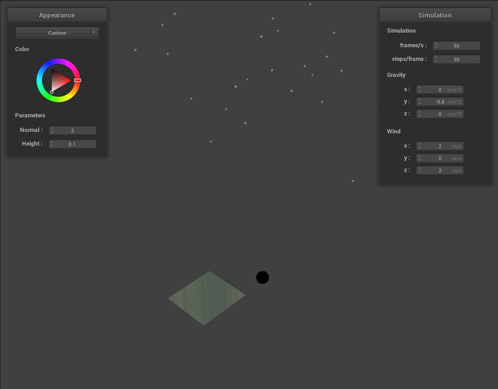
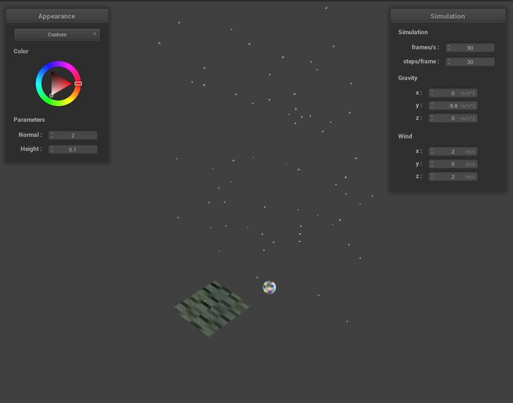

So far we created a simple scene with rain falling on a dry ground and rain splashes. The scene consists of a plane representing the ground and a sphere to highlight the reflectance of water on the ground. The rain system is initalized with 100 raindrop particles that are uniformly randomly positioned with mean 10 meters above to ground. Each raindrop was modeled as low resolution sphere meshes with a special rain shader (currently uses phong shading). Raindrops are also effect by a wind force and their velocity is capped by a terminal velocity of 9 meters per second. Once a raindrop hits the ground it is reinitalized in the sky above and the texture of the ground is dynamically updated to display an effect on the ground. Right now this effect is to change the alpha value of the ground. The ground has a mirror shader to reflect the surrounding enviroment.
Here are some snapshots of our simulation thus far. From the results the rain seems to fall very quickly, even with termial velocity set, so it is hard to view individual raindrops fall. Also since the shading on the raindrops is currenlty just phong shading which makes the droplets look grey instead of like water. Additionally, since the underlying mesh for the rain is a low resolution sphere, the rain looks like round specks and elongated water droplets. The code for updating the opacity is still in the works and it currently effects a random part of the ground mesh.
|  |
|  |
We are currently behind on our schedule. One issue is that simulating 500 raindrops at a time causes lag. The current fix of reducing the number of simulated particles works well enough for our small scene, but will need a more robust fix when we want to make a bigger scene with more features such as lighitng, streak blurring, or a more detailed enviroment. Another issue is that updating the texture map for the ground has proven to be difficult and the current effect is far off the effect that we want.
Most of the tasks in the fourth week are things that we think will look nice and are stretch goals. If necessary we can use that week to as a buffer if the dynamic update of the ground texture proves to be more difficult.